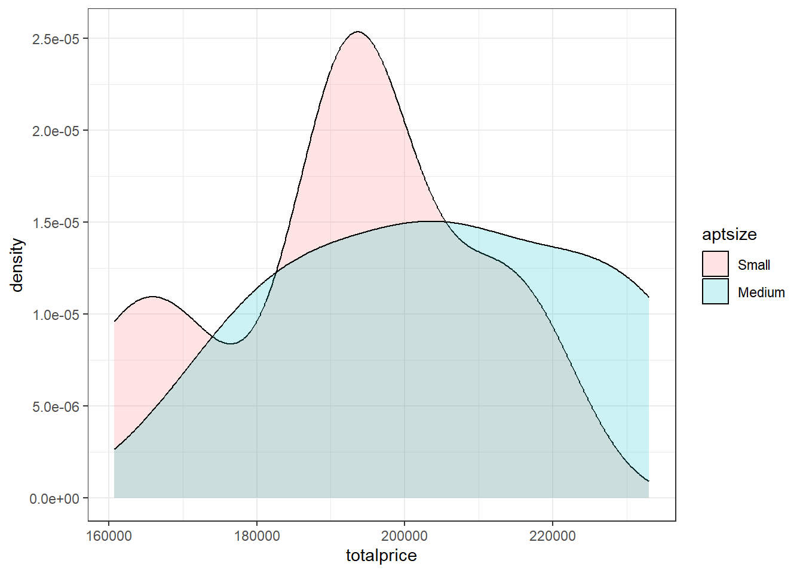
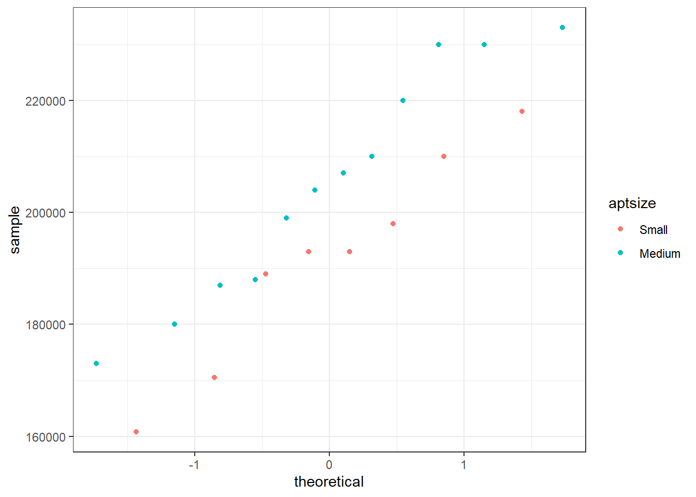

5 Assessment 2
A rule of thumb used by realtors in Vitoria, Spain, is that each square meter of apartment will cost roughly €3000; however, there is some suspicion that this figure is high for apartments in the \(55\) to \(66 m^2\) range.
Using \(5 m^2\) brackets, that is, \([55, 60)\) (small apartments) and \([60, 65)\) (medium apartments), we aim to find out if there is evidence that suggets that the average cost difference between the medium and small apartment sizes is less than €15,000.
Use a 5% significance level for all tests.
1. Are assumptions met to use a t-test? Explain
2. Use the data frame VIT2005 and the variables totalprice and area to test the appropriate hypothesis at a 5% significance level.
3a. Does the answer for (b) differ if the variances are assumed to be equal?
3b. Can the hypothesis of equal variances be rejected?
Solutions
From the description of the data, it is not clear if they were obtained as a random sample of all apartments in Vitoria; however, it is reasonable to assume the distribution of totalprice for both medium and small apartments follows a normal distribution.
To solve this problem, start by creating a variable aptsize.
# There are many ways of doing this. Here are 2 options
##Method 1
# Separate out the small apartments and add a label column
VIT2005SMALL <- VIT2005[VIT2005$area>=55&VIT2005$area<60,]
VIT2005SMALL$aptsize<-rep("Small", nrow(VIT2005SMALL))
# Separate out the medium apartments and add a label column
VIT2005MED <- VIT2005[VIT2005$area>=60&VIT2005$area<65,]
VIT2005MED$aptsize<-rep("Medium", nrow(VIT2005MED))
#Make this into one data frame of small and medium apartments
VITsub <-rbind(VIT2005SMALL,VIT2005MED)
##OR Method 2
#Split up and label by apartment size
VIT2005SPLIT <- within(data = VIT2005, expr = {aptsize <- factor(cut(area, breaks = c(50, 55, 60, 65, 200), right = FALSE), labels = c("Tiny", "Small", "Medium", "Large"))})
#Select out only the Small and Medium apartments
VITsub <- VIT2005SPLIT[VIT2005SPLIT$aptsize=="Small"|VIT2005SPLIT$aptsize=="Medium",]Then, verify the reasonableness of the normality assumption for the cost of the two apartment sizes.
#This can be done using ggplot
ggplot(data = VITsub, aes(totalprice, fill = aptsize)) +
geom_density(alpha = 0.2) +
theme_bw()

#and a Shapiro-Wilk Normality Test
#Pull out the apartment prices (using method 1 previously)
SmallAptPrice <- VIT2005SMALL$totalprice
MediumAptPrice <- VIT2005MED$totalprice
#(or using method2 previously)
SmallAptPrice <- VITsub$totalprice[VITsub$aptsize == "Small"]
MediumAptPrice <- VITsub$totalprice[VITsub$aptsize == "Medium"]
#Run the normality test
shapiro.test(SmallAptPrice)##
## Shapiro-Wilk normality test
##
## data: SmallAptPrice
## W = 0.95523, p-value = 0.7637##
## Shapiro-Wilk normality test
##
## data: MediumAptPrice
## W = 0.94251, p-value = 0.5313The density plots and normal quantile-quantile plots suggest it may be reasonable to assume the price for both sizes of apartments follow normal distributions. The normality tests conclude the same. Now, proceed with the five-step procedure.
Since the problem wants to test if the average between the medium and small apartment sizes is less than €15,000, use a lower one-sided alternative hypothesis.
The test statistic chosen should be \(\bar{X}-\bar{Y}\), because \(E[\bar{X}-\bar{Y}] = \mu_X-\mu_Y\)
## [1] 205083.3 191531.5The value of the test statistic is therefore \(205083.3333 − 191531.5287 = 13551.8046\).
Under the assumption that \(H_0\) is true, the Standardised Test Statistic will therefore follow the distribution: \[\frac{\left[\left(\bar{X}-\bar{Y}\right)-\delta_0\right]}{\sqrt{\left(\frac{S^2_X}{n_X}+\frac{S^2_Y}{n_Y}\right)}} \dot{\sim}t_v\]
This is what will be used to complete the test.
Finding the Rejection Region
The degrees of freedom are needed first:
\[v=\frac{\left(\frac{s^2_X}{n_X}+\frac{s^2_Y}{n_Y}\right)^2}{\frac{(s^2_X/n_X)^2}{n_X-1}+\frac{(s^2_Y/n_Y)^2}{n_Y-1}}=16.0129 \]
Because the standardized test statistic is distributed approximately \(t_ν\), and \(H_1\) is a lower one-sided hypothesis, the rejection region is \(t_{obs} < t_{0.05; 16.0129}\).
From the statistical tables or from R, the critical value, \(t_{0.05;16.0129}\) is −1.7458 and the rejection region is therefore \(t_{obs} < −1.7458\).
## [1] -1.745797Finding the Standardised Test Statistic and p-value
\[t_{obs}=\frac{\bar{x}-\bar{y}-\delta_0}{\sqrt{\frac{s^2_X}{n_X}+\frac{s^2_Y}{n_Y}}} = -0.1628\]
The p-value is the area under the normal distribution curve that corresponds to the Standardised Test Statistics we just calculated. This can be found in the statistical tables or in R:
##
## Welch Two Sample t-test
##
## data: MediumAptPrice and SmallAptPrice
## t = -0.16284, df = 16.013, p-value = 0.4363
## alternative hypothesis: true difference in means is less than 15000
## 95 percent confidence interval:
## -Inf 29077.34
## sample estimates:
## mean of x mean of y
## 205083.3 191531.5(The degrees of freedom are also in this output)
The p-value is therefore \(P(t_{16.0129} \leq -0.1628 = 0.4363\).
I. From the rejection region, we fail to reject \(H_0\) because \(t_{obs} = -0.1628\) is greater than -1.7459 and is therefore outside of the rejection region.
OR
- From the p-value, we fail to reject \(H_0\) because the p-value \(0.4363\) is greater than 0.05.
Whichever method we use, we fail to reject \(H_0\).
There is not sufficient evidence to suggest the average totalprice between the medium and small apartment sizes is less than €15,000.
The assumption placed on the variances changes the degrees of freedom and therefore there will be a new critical value and rejection region as well as a new Standardised Test Statistic and P-value.
As we are only asked to compare the conclusions, we can jump straight to re-running the t.test() code with the new assumption of equal variances and review the outcome, rather than repeating the 5-step process.
##
## Two Sample t-test
##
## data: MediumAptPrice and SmallAptPrice
## t = -0.1601, df = 18, p-value = 0.4373
## alternative hypothesis: true difference in means is less than 15000
## 95 percent confidence interval:
## -Inf 29237.82
## sample estimates:
## mean of x mean of y
## 205083.3 191531.5The p-value is still larger than 0.05 and so the conclusion is the same as in question 2.
To check whether we should reject the assumption of equal variances (used in Question 2) and instead use the unequal variance test results (from Question 1), we should complete an F-test on the variances.
This can be done simply using:
##
## F test to compare two variances
##
## data: MediumAptPrice and SmallAptPrice
## F = 1.1756, num df = 11, denom df = 7, p-value = 0.8594
## alternative hypothesis: true ratio of variances is not equal to 1
## 95 percent confidence interval:
## 0.2496275 4.4187049
## sample estimates:
## ratio of variances
## 1.175613The hypothesis of equal variance cannot be rejected at the \(\alpha = 0.05\) significance level. Going forward this means we should report the results from Question 2 for this data.